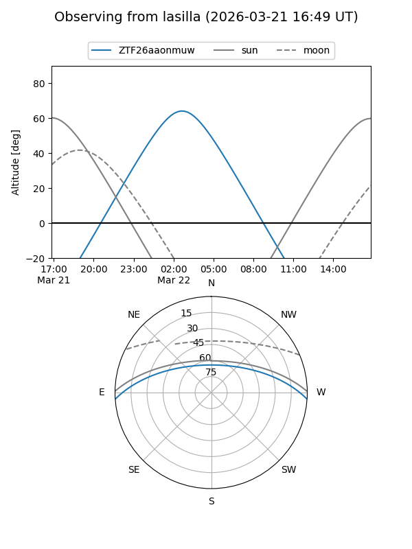
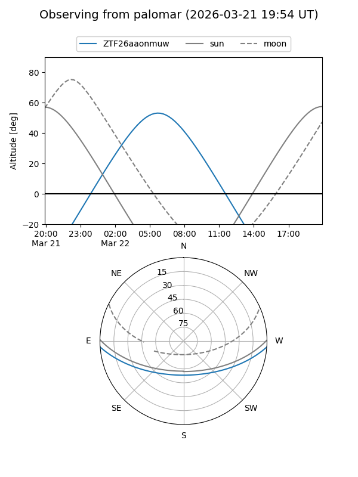

ZTF26aaonmuw
Target ZTF26aaonmuw at 2026-03-22 08:40
Aliases and brokers:
FINK: link
Lasair: link
ALeRCE: link
alt names
ZTF26aaonmuw (ztf,fink_ztf)
Coordinates:
equatorial (ra, dec) = 148.2073,-3.31267
equatorial (HMS+DMS) = 09:52:49.76,-03:18:45.61
galactic (l, b) = (241.0721,+37.28060)
Flags:
Photometry:
last ztfg=19.87
1 ztfg detections
Lightcurve
Visibility


Additional plots